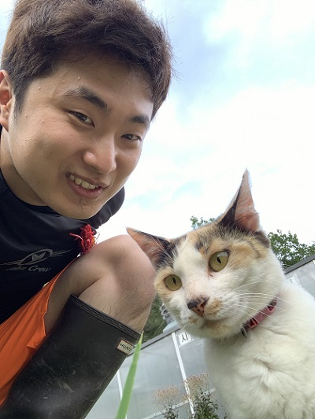

인간은 한시도 쉬지도 않고 뇌가 활동하고 그 활동할때 나타나는 뇌파의 안정성에 따라 우리의 감정또한 수시로 변하기 일수이다. 요즘같이 바쁜 일상을 살아가는, 경쟁의 시대에 살아가야하는 우리는 더욱 더 이러한 불안정한 뇌파에 휩싸일수 밖에 없다. 이러한 뇌파를 우리는 진정시킬 필요가 있다고 생각했고,난 숲속에 뇌가 있듯이 표현했다. 또한 뒤에 만다라(마음의 평화와 균형을 상징)를 배치해 이러한 뜻을 더욱 깊게 표현했다.
우리는 지구에 살고있다. 대부분의 사람들은 지구의 자연환경과 경이로움에 감탄한다. 나 역시 그렇다. 그러나 나는 이러한 생명의 신비로움과 지구가 만들어낸 물체들의 촉감이 감탄스러울 정도로 다양하다는걸 깨달았다. 그래서 이러한 지구의 아름다움을 그 자체도 아름답다는 걸 표현하기 위해 수염 말고 다 자연에 있는 재료들만 사용해 표현해봤다.
이름: 임태현
나이: 만 23세
거주지: 서울시 서초구
취미: 사이클, 웨이트 트레이닝, 게임, 산책

잘하는 분야: 영어, 창의력, 추진력
못하는 분야: 인내, 성실